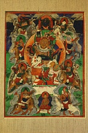

Дзамбала в тибетском Буддизме, в индийской традиции богом богатства является Кубера, владыкой якшей, киннаров и гухьяков, в Непале, например, Кубера и Дзамбала является одним и тем же божеством. Согласно древнеиндийской мифологии Кубера считается внуком великого риши Пуластьи, сыном мудреца Вишраваса (другое его имя Вайшравана). Кубера также является хранителем скрытых в земле сокровищ и хранителем севера он один из локопалов.
В Тибетском Буддизме является богом богатства. По своим функциям и иконографии Замбала схож с Куберой, но есть и некоторые отличия. Прежде всего существует пять видов бога богатства, различаются они по цветам.
Белый Дзамбала это проявление Ченрези (Авалокитешвары), его изображают восседающим на снежном льве в левой руке у него мангуста извергающая драгоценности. Считается что он прекращает страдания, устраняет дурную карму и предотвращает катастрофы. Его мантра: Ом Падма Трота Арья Замбала Сидхая Хум Пэт. По фэн-шуй больше всего подходит для практики людям с элементом металла и родившимся в год обезьяны и петуха.
Желтый Дзамбала, является эманацией Будды Ратнасамбхавы, его изображают, сидящем на лотосе, солнечном и лунном дисках, в левой руке мангуста, извергающая драгоценности. Его мантра: Ом Замбала Залентае Соха. Согласно фэн-шуй наиболее подходит для практики людям с элементом земли и родившимся в годы быка, дракона, овцы и собаки.
Красный Дзамбала – проявление Ваджрасатвы, тибетское имя – Дзамбала Мапо. Существует версия, что он произошел от индуистского бога Ганеша, может изображаться с головой слона, иногда изображается с двумя лицами и четырьмя руками. Он также держит мангусту и имеет форму Яб – Юм. У данной формы божества богатства есть две мантры: "Ом Дзамбала Дзалим Дзая Нама Мумей Е Ше Е". Ее мантра: "Ом Дзачини Дзамбала Дзамбала Сваха". Согласно фэн-шуй наиболее подходит для практики людям с элементом огня, знаки змеи и лошади.
Зеленый Дзамбала проявляет эманацию Будды Акшобьи. Обычно он имеет форму Яб – Юм, часто изображается синего цвета, в руке мангуста. По легенде он дал обет в присутствии Будды Шакьямуни защищать тех, кто поет его мантру: Ом Замбала Залентае Соха. Согласно фэн-шуй наиболее подходит для практики людям с элементом дерева, животные тигр и кролик.
Черный Замбала, его часто называют главой пяти великих Замбал, он так же является манифестацией Будды Акшобьи, изображается в гневной форме. Говорят что, он дает благосостояние даже вопреки кармической обусловленности, поэтому и стоит над всеми остальными. Согласно фэн-шуй наиболее подходит для практики людям с элементом воды, животные свинья и крыса.
Еще одно из проявлений бога богатства это Намсарай в Монголии и Бурятии его называют Намсрэ. Намсарай, канонически изображается золотым в красной с золотом одежде. Правой рукой благословляет, левой держит мангусту. Нимб у головы - зеленый, большой нимб - синий с золотыми прожилками. Престол - обычно красный, обрамлен лепестками лотоса. Над его головой изображается Бодхисаттва Ваджрапани. Внизу - Золотая Тара. С боков - по четыре всадника.